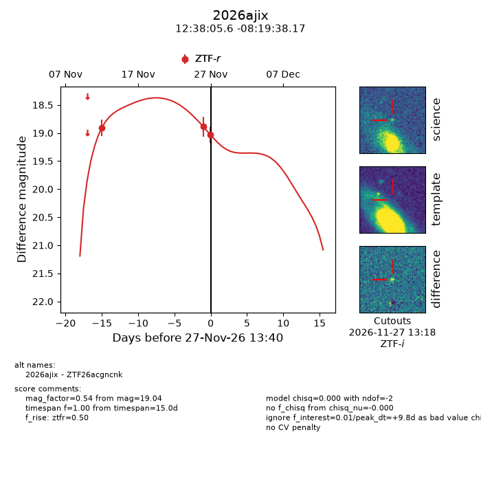
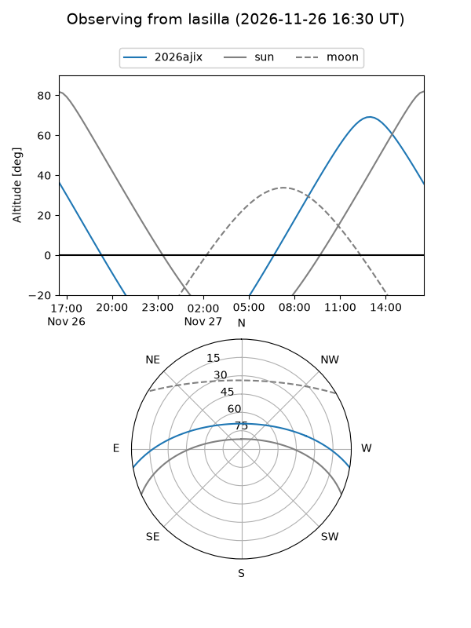
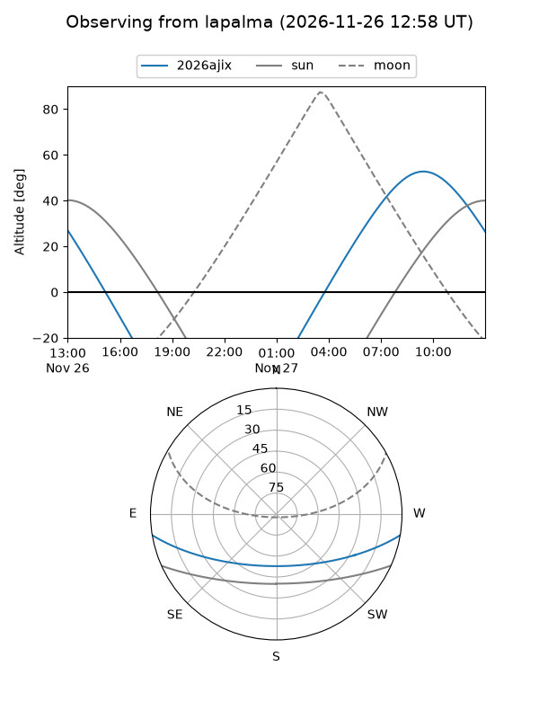
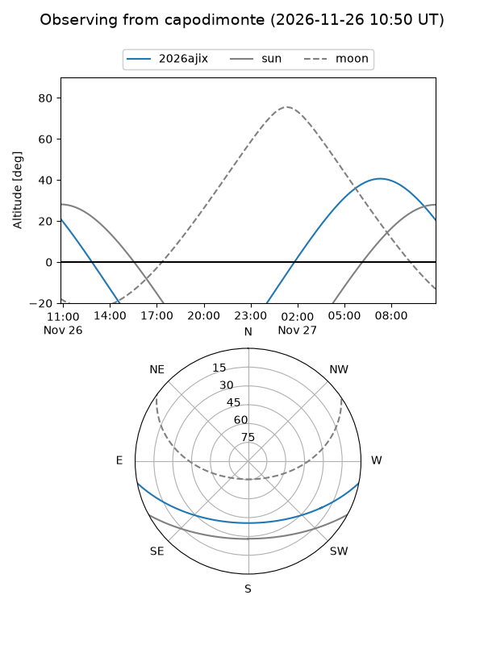
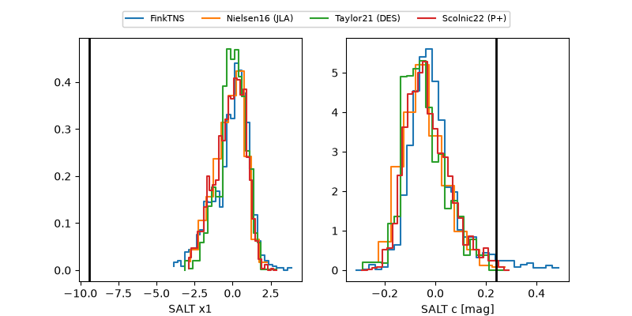

2026ajix
Target 2026ajix at 2026-11-27 13:41
Aliases and brokers:
FINK-ZTF: ztf.fink-portal.org/ZTF26acgncnk
Lasair-ZTF: lasair-ztf.lsst.ac.uk/objects/ZTF26acgncnk
ALeRCE-ZTF: alerce.online/object/ZTF26acgncnk
YSE-PZ: ziggy.ucolick.org/yse/transient_detail/2026ajix
TNS name: wis-tns.org/object/2026ajix
Direct TNS query: direct search
alt names
ZTF26acgncnk (ztf,fink_ztf)
2026ajix (tns,yse)
Coordinates:
equatorial (ra, dec) = 189.5234,-8.32727
equatorial (HMS+DMS) = 12:38:05.61,-08:19:38.17
galactic (l, b) = (297.2557,+54.39734)
Flags:
peak dt: +9.8
Photometry:
last ztfr=19.04
3 ztfr detections
Lightcurve

Visibility



Additional plots
